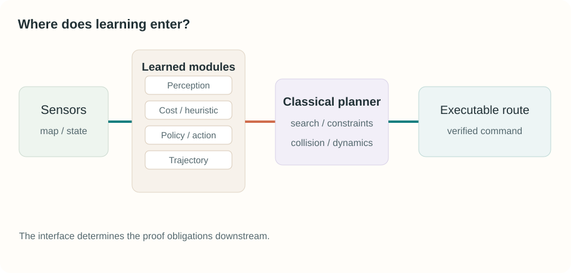
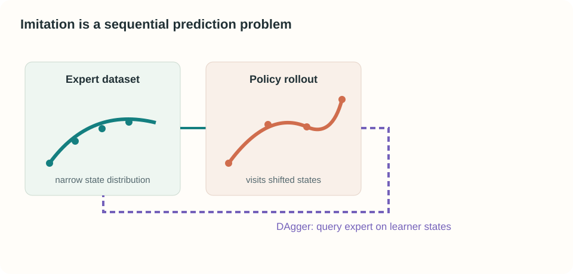
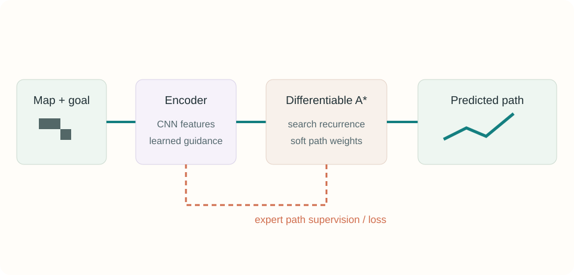
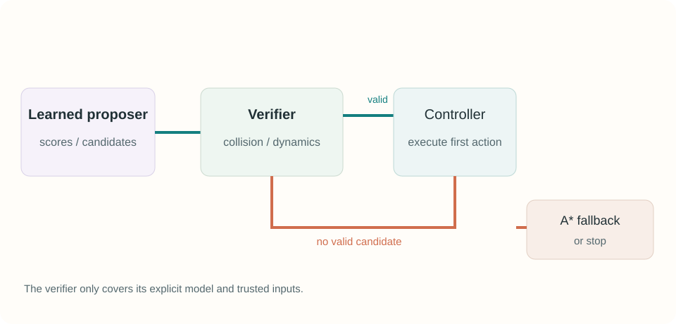

学习型路径规划：究竟应该让机器学习哪一部分？
从专家轨迹、交互式模仿和强化学习，到可微分搜索与安全混合架构。理解学习模块的输入、输出和保证边界，再决定它是否应该接管规划器。
学习型方法到底学会了什么？
路径规划不是一个单一输出。一个系统至少要把环境表示成可计算的状态，确定哪些状态或运动可行，再在候选路线之间权衡距离、风险、时间和能耗。学习算法可以进入其中不同环节：识别可通行区域、预测障碍物运动、估计代价、给搜索提供引导、直接选择动作，或生成一段候选轨迹。它们学习的对象不同，所需数据、可解释性和安全验证方式也不同。
因此，比较“学习型规划”和“A*”并不严谨：前者可能是一个感知模型、一个搜索引导图或一个控制策略；后者是定义明确的图搜索算法。首先应问清楚学习模块替代了哪一层、保留了哪一层。
LEARNING-BASED PLANNING / 26

把学习能力放在合适的规划接口
| 学习对象 | 模型输出 | 后续经典模块 | 需要额外验证的内容 |
|---|---|---|---|
| 语义 / 可通行感知 | 占据或通行概率、语义标签 | 地图融合、碰撞检测、搜索 | 校准误差、未知区域、误检漏检 |
| 代价 / 启发式 | 边代价或搜索优先级 | A*、图搜索或优化器 | 量纲、可纳性、是否仍保最优性 |
| 动作策略 | 离散动作或速度命令 | 动力学、约束与安全过滤 | 闭环稳定性、分布外状态、制动 |
| 轨迹分布 | 多个可能的未来动作 / 轨迹 | 碰撞过滤、时序化、控制器 | 轨迹可行性、多模态覆盖、延迟 |
| 环境动力学 | 状态转移或短时预测 | MPC、采样规划、风险评估 | 模型偏差、不确定性与长时漂移 |
尤其要注意：任意神经网络输出的“启发式分数”不自动满足 A* 的可纳性或一致性；把它直接加进 f = g + h 后，传统最优性证明可能不再成立。若只用它调整扩展顺序，仍需区分搜索顺序与最终代价。
模仿学习：从专家轨迹到行为克隆
行为克隆（Behavior Cloning, BC）把专家规划器视为监督信号。给定观测 o（例如局部地图、目标方向和速度）以及专家动作 a*，策略网络学习近似条件分布 πθ(a | o)。离散动作通常使用交叉熵，连续动作可使用回归损失或概率分布建模。
问题在于训练数据通常来自专家访问的状态分布，而部署时状态由学习策略自己的动作决定。一次小偏差可能把机器人带到专家数据很少覆盖的位置，之后的预测误差会继续累积。这不是普通独立同分布分类误差，而是一个带反馈的序列决策问题。
LEARNING-BASED PLANNING / 26

DAgger：让专家标注学习策略真正走到的状态
Dataset Aggregation（DAgger）通过迭代收集学习策略访问的观测，并让专家对这些观测给出动作标签。第 k 轮得到策略 πk 后，采集其访问分布 dπk 下的观测，再把专家标签并入训练集：
直觉上，专家不只纠正训练集里原本“应该怎么走”的状态，也纠正策略偏离后“实际会走到”的状态。它需要专家查询、迭代采集和重新训练；并非只要重复训练就一定解决所有泛化问题。原论文的理论分析还依赖 no-regret 学习器等条件，不能把它简化为无条件的安全保证。
强化学习：把路径规划写成序列决策
当没有可直接调用的专家标签时，可以把导航写成马尔可夫决策过程（MDP）：状态 s_t、动作 a_t、转移分布 P(s_{t+1} | s_t, a_t)、奖励 r_t 与折扣因子 γ。机器人在环境中反复试验，以累计回报作为优化目标。
状态不一定只是二维位置。若观测不足以确定下一状态分布，就需要把问题视为部分可观测 MDP（POMDP），用历史、循环状态或信念状态补充信息。奖励函数也不是安全约束：给碰撞一个很大的负分，并不意味着训练期间绝不会碰撞，更不代表部署时具有形式化安全保证。
终止状态不能再 bootstrap：若到达目标或发生终止事件，目标值只保留即时回报。代码示例会把这一点显式写出来。
可微分规划：学习模块也可以保留搜索结构
另一条路线不是让网络直接输出最终动作，而是把规划计算嵌入可训练模型。Value Iteration Networks（VIN）把值迭代的近似计算表示成卷积结构；Neural A* 则学习引导图，并将可微分的 A* 搜索与卷积编码器结合。它们都试图利用数据学习任务相关的表示，同时保留某种显式搜索结构。
LEARNING-BASED PLANNING / 26

这类方法的优势是能让网络学到任务相关的通行偏好；限制则包括训练分布、地图表示、搜索近似和代价定义。论文中的数据集表现不能直接转化为对任意机器人足迹、任意地图和任意动力学约束的保证。
混合架构：让学习提出候选，让几何约束决定可执行性
一个常见而清晰的工程接口是：学习模型负责提供语义目标、启发式、采样分布或候选动作；经典规划器负责满足几何与运动学约束；运行时安全层负责拒绝不可行命令，并在必要时停车或切换到保守回退策略。
LEARNING-BASED PLANNING / 26

这并不意味着“混合架构天然安全”。验证器必须使用可信的地图、足迹、时间戳和运动模型；回退规划器也必须被测试。若输入地图漏掉了真实障碍，几何检查仍可能给出错误的“安全”结论。
交互：选择学习模块进入规划栈的位置
同样叫“学习型规划”，不同输出会改变下游验证责任。切换模块，查看它输出什么、哪些保证仍由经典组件负责。
学习代价：模型输出风险或通行代价；碰撞几何、未知区域和代价尺度仍需独立检查。
这是规划接口的概念选择器，不会调用或训练任何神经网络。
可执行示例：Q-learning 学会一张小地图，但新障碍会改变问题
Python 3.10+，只使用标准库。智能体在固定 6×6 网格中通过 Q-learning 学习四方向动作。状态只包含当前格子，不包含完整地图，因此训练好的策略并不知道新出现的障碍。测试时增加一个新障碍：策略会尝试进入障碍格，运行时守卫拒绝该动作，再调用 BFS 回退规划器重新找路。
import random
from collections import deque
WIDTH = HEIGHT = 6
START, GOAL = (0, 0), (5, 5)
BASE_WALLS = {(2,1),(2,2),(2,3),(4,2),(4,3),(1,4)}
ACTIONS = ((1,0,"R"),(-1,0,"L"),(0,1,"D"),(0,-1,"U"))
def free(cell, walls):
x,y = cell
return 0 <= x < WIDTH and 0 <= y < HEIGHT and cell not in walls
def transition(state, action, walls):
dx,dy,_ = ACTIONS[action]
nxt = (state[0]+dx, state[1]+dy)
if not free(nxt, walls):
return state, -3.0, False
if nxt == GOAL:
return nxt, 20.0, True
return nxt, -1.0, False
def train_q(seed=7, episodes=8000):
rng = random.Random(seed)
q = {}
for episode in range(episodes):
state = START
epsilon = max(0.03, 1.0 - episode / episodes)
for _ in range(80):
values = q.setdefault(state, [0.0] * len(ACTIONS))
if rng.random() < epsilon:
action = rng.randrange(len(ACTIONS))
else:
best = max(values)
ties = [i for i,v in enumerate(values)
if abs(v-best) < 1e-12]
action = rng.choice(ties)
nxt, reward, done = transition(state, action, BASE_WALLS)
future = 0.0 if done else max(q.setdefault(nxt, [0.0]*4))
target = reward + (0.95 * future if not done else 0.0)
values[action] += 0.2 * (target - values[action])
state = nxt
if done:
break
return q
def bfs_path(start, goal, walls):
queue = deque([start])
parent = {start: None}
while queue:
state = queue.popleft()
if state == goal:
path = []
while state is not None:
path.append(state)
state = parent[state]
return path[::-1]
for dx,dy,_ in ACTIONS:
nxt = (state[0]+dx, state[1]+dy)
if free(nxt, walls) and nxt not in parent:
parent[nxt] = state
queue.append(nxt)
return None
def rollout(q, walls, use_classical_fallback=False):
state, path, fallbacks = START, [START], 0
for _ in range(60):
values = q.get(state, [0.0]*4)
action = max(range(4), key=lambda i: values[i])
nxt, _, done = transition(state, action, walls)
if nxt == state:
if not use_classical_fallback:
return path, False, fallbacks
route = bfs_path(state, GOAL, walls)
if route is None or len(route) < 2:
return path, False, fallbacks
nxt = route[1]
fallbacks += 1
done = nxt == GOAL
state = nxt
path.append(state)
if done:
return path, True, fallbacks
return path, False, fallbacks
q = train_q()
train_path, train_ok, _ = rollout(q, BASE_WALLS)
assert train_ok and train_path[-1] == GOAL
assert all(free(p, BASE_WALLS) for p in train_path)
assert len(train_path) - 1 == 10
shifted_walls = BASE_WALLS | {(1,0)}
raw_path, raw_ok, _ = rollout(q, shifted_walls)
safe_path, safe_ok, fallback_count = rollout(q, shifted_walls, True)
assert not raw_ok
assert safe_ok and safe_path[-1] == GOAL
assert fallback_count == 1
assert all(free(p, shifted_walls) for p in safe_path)
print("Q-learning:", len(train_path)-1, "steps on training map")
print("shifted map:", "policy-only failed;", "BFS fallback steps",
len(safe_path)-1, "fallbacks", fallback_count)结果是：训练地图上策略在 10 步到达目标；新增障碍后，单独策略失败，BFS 回退成功。这个小实验只说明“状态不含地图时，策略不能适应未编码的新障碍”，不代表所有学习策略都会失败，也不是一个深度网络或真实机器人基准。
如何严谨评估学习型规划
- 按地图或环境划分训练/验证/测试集：不能把同一张地图的相邻轨迹随机拆分后称为跨环境泛化。
- 对照同一经典基线：固定地图、机器人模型、预算、碰撞检测和目标定义。
- 保留失败与超时：同时报告成功率、碰撞率、路径代价、规划时延、人工介入和回退频率。
- 测试分布外场景：地图拓扑、障碍密度、传感器噪声、动力学、照明或视角变化应单独分层。
- 评估安全过滤：报告拒绝率、误拒绝、漏检和回退行为；不能只展示模型成功运行的视频。
训练回报变高、离线动作准确率变高和真实任务成功率变高是不同指标。每一项结论都要标明任务、数据划分、运行预算和评估环境。
原始论文与教材
- Ross, Gordon & Bagnell (2011), A Reduction of Imitation Learning and Structured Prediction to No-Regret Online Learning（DAgger）
- Tamar et al. (2016), Value Iteration Networks, NeurIPS
- Yonetani et al. (2021), Path Planning using Neural A*, ICML
- Faust et al. (2018), PRM-RL, ICRA
- Sutton & Barto, Reinforcement Learning: An Introduction, 2nd edition